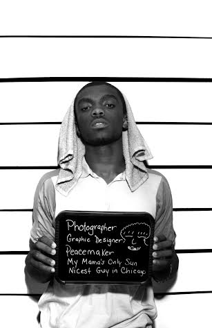
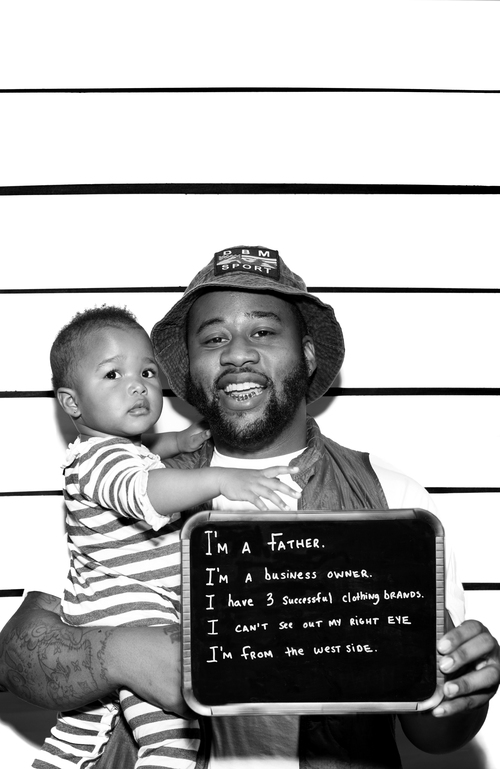

Imani Amos: The 50 Shots Project
Imani Amos doesn’t call herself a photographer by trade, but she has quite possibly made one of the most powerful and relevant photography projects of our current time with her “50 Shots Project: Humanizing America’s Most Hunted” originating out of Chicago. The project features 50 black men, who are all positive and active members of their community posed in mug shots, only this isn’t your typical mug shot.
High incarceration rates, killings, prejudices and stereotypes plague the black man today and have historically in society. Amos’ project sheds a light on these deep rooted issues and brings to the forefront men some may deem a threat or judge based on the color of their skin. These men are leaders, entrepreneurs, community members, activists, teachers, fathers and most importantly humans. What began as a complex question for her, “what would our community lose if these 50 black men were imprisoned?” or worse even, killed, and it evolved into a beautiful testament to her love for not only the black men in her life, but also in the city, and in the grandeur scheme of our nation.
amfm: How was the idea for this project born? Why is this project and subject matter important to you? How long was it in the works?
imani amos: On a whim, I thought of this project about three or so years ago. I had this little idea notebook and every time i came up with an idea, I’d jot it down. I was thinking about all the black male friends I have and was like what if these guys were in jail. I was imagining how sad I would be. I was also imagining how a police officer could arrest one of MY friends, because I know how wonderful my black male friends are. Im one of those girls who has a lot of male friends so thinking that someone could see them as derelict, suspicious, or even dangerous baffles me, since I know and can vouch for their character. Anyway, so the concept stayed in my little notebook until last year, 2014, when I was planning my yearly takeover with my good friend Shani. We both decided that by the end of the year we’d have solo art shows. She knew what she wanted to do and then randomly I thought of my old idea. I just picked a number that I thought was overwhelming and would bring my point home and boom, “50 Shots” was born. So, I spent the summer of 2014 driving around Chicago with a borrowed camera and light, taking photos of 50 black men who are positively contributing to this here world. The subject matter is important to me because it’s always relevant. Even if black men weren't constantly discriminated against, to humanize someone, anyone, by displaying their attributes is powerful. You get insight on who someones is, because we all are important with stories to tell; however, because of recent events and because of this country’s history, this project is even more pertinent.
amfm: How did you find the men featured for the project? Were they chosen at random or were these people you knew? Was there intent behind who you chose?
amos: One thing that I learned from this project is that I know A LOT of black men. I just hit up as many guys as I could to see if they wanted to participate. Emailed them out an official invitation so they knew I wasn’t playing and then I just sat back and waited for the responses. I ended up taking a couple photos of some guys that I didn't know very well because it was getting down to the wire and I wanted to be finished, but they were friends of guys who were in the project so there was only a small degree of separation. Otherwise, I’m good friends with or have some sort of relationship with the all of the guys photographed. I’m not related by blood to any of them but most of them are my family, which makes me want to vouch for them and tell their story even more. They are my brothers.
amfm: This was your first solo art show and artistic endeavor in this nature, how was the project received? This is something people say needs to be seen, circulated and done in many cities, especially in light of the current policing and culture of black men in society as of late and historically. Do you see the project evolving at all? After all there are 51 states…
amos: The project was received amazingly well. I’m quite sure it was received well because it was released right in the heat of some racial matters happens in the country. It was perfect timing. I was sitting on the project, not sure if I was ready to release it yet, but as soon as the verdict released that Officer Wilson who killed Mike Brown wasn’t to be indicted, I was like f that, this is a sign to release this project, done or not! I also think it was received well because of its simplicity and relatability. It didn't go over peoples’ heads, it was direct and impactful. I also think the number 50 was pretty powerful too. That’s a lot of folks! Even before I took the photos I knew I wanted to fill the walls with mugshots of black men. I wanted it to be overwhelming, and I think it was...in a good way. I’m enjoying folks contacting me about displaying the project in different places for different audiences to see. It just moved from La Catrina, a cafe in Pilsen, to Beauty and Brawn Gallery and Think Space in Logan Square. I received an invitation from both of the spaces to install the project just from word of mouth. That’s pretty cool. And folks like you all are still reaching out and asking questions. That makes me feel good! This project will evolve. I have plans. Keep an eye open for the summer!
amfm: What did you personally learn or takeaway in doing this project?
amos: I learned that I know a lot of great black men, waaaaay more than 50. I learned that I am grateful to have them in my life because I know a lot of folks can’t say they know a big amount of black men who are actually making strides in their communities. I learned that having a platform to express your humanity is sometimes important, and although we shouldn't HAVE to do it because we all are human, giving them this platform to let people know who they are was an honor for me. I also learned that I have an INSANE support system and I’m becoming more the artist that I want to be every single day. Oh and apparently I still enjoy photography...I’m not a photographer by trade necessarily but apparently I’m taking on that title now!
amfm: What were some of your favorites within the series and why?
amos: My absolute favorites are the ones with the babies. What can I say, I’m a sucker for babies! And one of those babies is my goddaughter. I think the ones with the babies are powerful because black men have a rep for being deadbeat dads and those two dads didn’t plan for their children BUT they are taking on their responsibilities greatly and are raising amazing little girls. I also really enjoy Jihad’s. He’s the one smoking. He’s such a comedian in real life and reading his board just reminds me of exactly who he is and the purpose of my project. You’d have to read his board to understand.amfm: Do you have any other projects up your sleeve now that you have successfully executed this one? What other ideas would you like to explore?
amos: I ALWAYS have ideas for projects up my sleeve. I have a lot of other creative outlets, so often I get consumed with those and don’t get to necessarily focus on my own passion project, but after doing “50 Shots,” I’ve learned that I have to make time for them. My next project will focus on black women though. That’s all I’ve got for you for now. I’ve also been working on a project called #colorFULL for a year. It’s an instagram project. Ideas are always flowing though. I’m an idea machine. Working on my execution though, but keep checking in on me!
amfm will also be hosting an event featuring the 50 Shots Project in conjunction with our Q&A with Imani Amos Saturday May 16th. For more information about the event, click here.
|
 |

|  |
pictured from top left to bottom right: AJ, Des, Jihad, Nick, Dutch, Joe
For more from Imani Amos